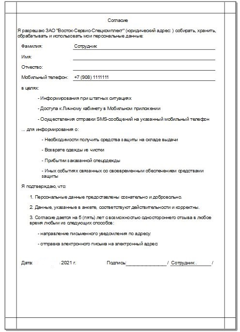
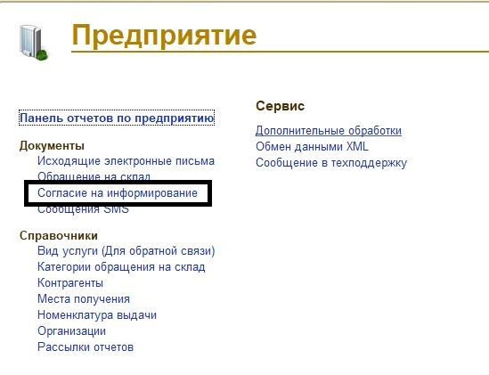

Согласие на информирование
Документ «Согласие на информирование» необходим для возможности осуществления функционала по SMS/E-mail информированию сотрудников предприятия и соблюдения законодательства в части защиты персональных данных.
Документ можно создать из карточки сотрудника по кнопке «Создать на основании»-«Согласие на информирование»
В сформированном документе необходимо указать вид информирования

После проведения документа необходимо сформировать печатную форму согласие и отдать на подпись сотруднику.

Также создание документа доступно из раздела «Предприятие»- документ согласие на информирование.

Документ можно заполнить:
-по существующим данным- документ заполнится всеми согласиями, которые уже есть в системе;
-по отсутствующим данным-заполнится теми сотрудниками, у которых еще нет оформленного согласия.